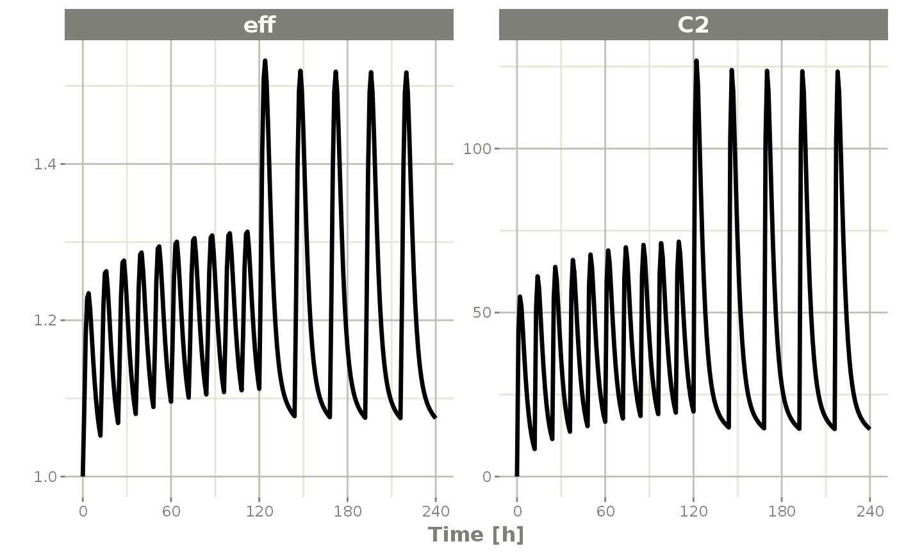
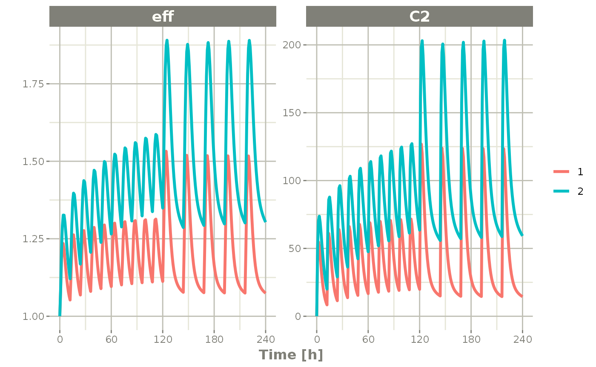

vignettes/rxode-single-subject.Rmd
rxode-single-subject.Rmd
library(RxODE)
#> RxODE 1.0.3 using 1 threads (see ?getRxThreads)
#> no cache: create with `rxCreateCache()`Originally, RxODE was only created to solve ODEs for one individual. That is a single system without any changes in individual parameters.
Of course this is still supported, the classic examples are found in RxODE intro.
This article discusses the differences between multiple subject and single subject solving. There are three differences:
id column in parameters($params) as well as in the actual dataset.The first obvious difference is in speed; With multiple subjects you can run each subject ID in parallel. For more information and examples of the speed gains with multiple subject solving see the Speeding up RxODE vignette.
The next difference is the amount of information output in the final data.
Taking the 2 compartment indirect response model originally in the tutorial:
mod1 <-RxODE({
KA=2.94E-01;
CL=1.86E+01;
V2=4.02E+01;
Q=1.05E+01;
V3=2.97E+02;
Kin=1;
Kout=1;
EC50=200;
C2 = centr/V2;
C3 = peri/V3;
d/dt(depot) =-KA*depot;
d/dt(centr) = KA*depot - CL*C2 - Q*C2 + Q*C3;
d/dt(peri) = Q*C2 - Q*C3;
d/dt(eff) = Kin - Kout*(1-C2/(EC50+C2))*eff;
eff(0) = 1
});
#> qs v0.23.6.
et <- et(amount.units='mg', time.units='hours') %>%
et(dose=10000, addl=9, ii=12) %>%
et(amt=20000, nbr.doses=5, start.time=120, dosing.interval=24) %>%
et(0:240) # samplingNow a simple solve
x <- rxSolve(mod1, et)
x
#> ▂▂▂▂▂▂▂▂▂▂▂▂▂▂▂▂▂▂▂▂▂▂▂▂▂▂▂▂▂▂ Solved RxODE object ▂▂▂▂▂▂▂▂▂▂▂▂▂▂▂▂▂▂▂▂▂▂▂▂▂▂▂▂▂
#> ── Parameters (x$params): ──────────────────────────────────────────────────────
#> KA CL V2 Q V3 Kin Kout EC50
#> 0.294 18.600 40.200 10.500 297.000 1.000 1.000 200.000
#> ── Initial Conditions (x$inits): ───────────────────────────────────────────────
#> depot centr peri eff
#> 0 0 0 1
#> ── First part of data (object): ────────────────────────────────────────────────
#> # A tibble: 241 x 7
#> time C2 C3 depot centr peri eff
#> [h] <dbl> <dbl> <dbl> <dbl> <dbl> <dbl>
#> 1 0 0 0 10000 0 0 1
#> 2 1 44.4 0.920 7453. 1784. 273. 1.08
#> 3 2 54.9 2.67 5554. 2206. 794. 1.18
#> 4 3 51.9 4.46 4140. 2087. 1324. 1.23
#> 5 4 44.5 5.98 3085. 1789. 1776. 1.23
#> 6 5 36.5 7.18 2299. 1467. 2132. 1.21
#> # … with 235 more rows
#> ▂▂▂▂▂▂▂▂▂▂▂▂▂▂▂▂▂▂▂▂▂▂▂▂▂▂▂▂▂▂▂▂▂▂▂▂▂▂▂▂▂▂▂▂▂▂▂▂▂▂▂▂▂▂▂▂▂▂▂▂▂▂▂▂▂▂▂▂▂▂▂▂▂▂▂▂▂▂▂▂
print(x)
#> ▂▂▂▂▂▂▂▂▂▂▂▂▂▂▂▂▂▂▂▂▂▂▂▂▂▂▂▂▂▂ Solved RxODE object ▂▂▂▂▂▂▂▂▂▂▂▂▂▂▂▂▂▂▂▂▂▂▂▂▂▂▂▂▂
#> ── Parameters ($params): ───────────────────────────────────────────────────────
#> KA CL V2 Q V3 Kin Kout EC50
#> 0.294 18.600 40.200 10.500 297.000 1.000 1.000 200.000
#> ── Initial Conditions ($inits): ────────────────────────────────────────────────
#> depot centr peri eff
#> 0 0 0 1
#> ── First part of data (object): ────────────────────────────────────────────────
#> # A tibble: 241 x 7
#> time C2 C3 depot centr peri eff
#> [h] <dbl> <dbl> <dbl> <dbl> <dbl> <dbl>
#> 1 0 0 0 10000 0 0 1
#> 2 1 44.4 0.920 7453. 1784. 273. 1.08
#> 3 2 54.9 2.67 5554. 2206. 794. 1.18
#> 4 3 51.9 4.46 4140. 2087. 1324. 1.23
#> 5 4 44.5 5.98 3085. 1789. 1776. 1.23
#> 6 5 36.5 7.18 2299. 1467. 2132. 1.21
#> # … with 235 more rows
#> ▂▂▂▂▂▂▂▂▂▂▂▂▂▂▂▂▂▂▂▂▂▂▂▂▂▂▂▂▂▂▂▂▂▂▂▂▂▂▂▂▂▂▂▂▂▂▂▂▂▂▂▂▂▂▂▂▂▂▂▂▂▂▂▂▂▂▂▂▂▂▂▂▂▂▂▂▂▂▂▂
plot(x, C2, eff)
To better see the differences between the single solve, you can solve for 2 individuals
x2 <- rxSolve(mod1, et %>% et(id=1:2), params=data.frame(CL=c(18.6, 7.6)))
#> Warning: 'ID' missing in 'parameters' dataset
#> individual parameters are assumed to have the same order as the event dataset
print(x2)
#> ▂▂▂▂▂▂▂▂▂▂▂▂▂▂▂▂▂▂▂▂▂▂▂▂▂▂▂▂▂▂ Solved RxODE object ▂▂▂▂▂▂▂▂▂▂▂▂▂▂▂▂▂▂▂▂▂▂▂▂▂▂▂▂▂
#> ── Parameters ($params): ───────────────────────────────────────────────────────
#> # A tibble: 2 x 9
#> id KA CL V2 Q V3 Kin Kout EC50
#> <fct> <dbl> <dbl> <dbl> <dbl> <dbl> <dbl> <dbl> <dbl>
#> 1 1 0.294 18.6 40.2 10.5 297 1 1 200
#> 2 2 0.294 7.6 40.2 10.5 297 1 1 200
#> ── Initial Conditions ($inits): ────────────────────────────────────────────────
#> depot centr peri eff
#> 0 0 0 1
#> ── First part of data (object): ────────────────────────────────────────────────
#> # A tibble: 482 x 8
#> id time C2 C3 depot centr peri eff
#> <int> [h] <dbl> <dbl> <dbl> <dbl> <dbl> <dbl>
#> 1 1 0 0 0 10000 0 0 1
#> 2 1 1 44.4 0.920 7453. 1784. 273. 1.08
#> 3 1 2 54.9 2.67 5554. 2206. 794. 1.18
#> 4 1 3 51.9 4.46 4140. 2087. 1324. 1.23
#> 5 1 4 44.5 5.98 3085. 1789. 1776. 1.23
#> 6 1 5 36.5 7.18 2299. 1467. 2132. 1.21
#> # … with 476 more rows
#> ▂▂▂▂▂▂▂▂▂▂▂▂▂▂▂▂▂▂▂▂▂▂▂▂▂▂▂▂▂▂▂▂▂▂▂▂▂▂▂▂▂▂▂▂▂▂▂▂▂▂▂▂▂▂▂▂▂▂▂▂▂▂▂▂▂▂▂▂▂▂▂▂▂▂▂▂▂▂▂▂
plot(x2, C2, eff)
By observing the two solves, you can see:
id column both in the data frame and then data frame of parameters for each subject.The last feature that is not as obvious, modifying the individual parameters. For single subject data, you can modify the RxODE data frame changing initial conditions and parameter values as if they were part of the data frame, as described in the RxODE Data Frames.
For multiple subject solving, this feature still works, but requires care when supplying each individual’s parameter value, otherwise you may change the solve and drop parameter for key individuals.
| Feature | Single Subject Solve | Multiple Subject Solve |
|---|---|---|
| Parallel | None | Each Subject |
| $params | data.frame with one parameter value | data.frame with one parameter per subject (w/ID column) |
| solved data | Can modify individual parameters with $ syntax | Have to modify all the parameters to update solved object |
The session information:
sessionInfo()
#> R version 4.0.3 (2020-10-10)
#> Platform: x86_64-pc-linux-gnu (64-bit)
#> Running under: Ubuntu 16.04.7 LTS
#>
#> Matrix products: default
#> BLAS: /usr/lib/openblas-base/libblas.so.3
#> LAPACK: /usr/lib/libopenblasp-r0.2.18.so
#>
#> locale:
#> [1] LC_CTYPE=en_US.UTF-8 LC_NUMERIC=C
#> [3] LC_TIME=en_US.UTF-8 LC_COLLATE=en_US.UTF-8
#> [5] LC_MONETARY=en_US.UTF-8 LC_MESSAGES=en_US.UTF-8
#> [7] LC_PAPER=en_US.UTF-8 LC_NAME=C
#> [9] LC_ADDRESS=C LC_TELEPHONE=C
#> [11] LC_MEASUREMENT=en_US.UTF-8 LC_IDENTIFICATION=C
#>
#> attached base packages:
#> [1] stats graphics grDevices utils datasets methods base
#>
#> other attached packages:
#> [1] qs_0.23.6 RxODE_1.0.3
#>
#> loaded via a namespace (and not attached):
#> [1] bitops_1.0-6 fs_1.5.0 xgxr_1.1.0
#> [4] RColorBrewer_1.1-2 rprojroot_2.0.2 Deriv_4.1.2
#> [7] tools_4.0.3 backports_1.2.1 utf8_1.1.4
#> [10] R6_2.5.0 rpart_4.1-15 Hmisc_4.4-2
#> [13] colorspace_2.0-0 nnet_7.3-14 lotri_0.3.1
#> [16] tidyselect_1.1.0 gridExtra_2.3 Exact_2.1
#> [19] compiler_4.0.3 textshaping_0.3.0 cli_2.3.0
#> [22] htmlTable_2.1.0 binom_1.1-1 expm_0.999-6
#> [25] desc_1.2.0 labeling_0.4.2 stringfish_0.14.2
#> [28] scales_1.1.1 checkmate_2.0.0 mvtnorm_1.1-1
#> [31] readr_1.4.0 pkgdown_1.6.1.9000 systemfonts_1.0.1
#> [34] stringr_1.4.0 digest_0.6.27 foreign_0.8-80
#> [37] rmarkdown_2.6 PreciseSums_0.4 base64enc_0.1-3
#> [40] jpeg_0.1-8.1 pkgconfig_2.0.3 htmltools_0.5.1.1
#> [43] highr_0.8 fastmap_1.1.0 htmlwidgets_1.5.3
#> [46] rlang_0.4.10 rstudioapi_0.13 farver_2.0.3
#> [49] generics_0.1.0 RApiSerialize_0.1.0 dplyr_1.0.4
#> [52] RCurl_1.98-1.2 magrittr_2.0.1 Formula_1.2-4
#> [55] Matrix_1.2-18 Rcpp_1.0.6 DescTools_0.99.40
#> [58] munsell_0.5.0 fansi_0.4.2 lifecycle_0.2.0
#> [61] stringi_1.5.3 yaml_2.2.1 MASS_7.3-53
#> [64] rootSolve_1.8.2.1 grid_4.0.3 ggrepel_0.9.1
#> [67] crayon_1.4.1 lmom_2.8 lattice_0.20-41
#> [70] splines_4.0.3 pander_0.6.3 hms_1.0.0
#> [73] sys_3.4 knitr_1.31 ps_1.5.0
#> [76] pillar_1.4.7 boot_1.3-25 gld_2.6.2
#> [79] glue_1.4.2 evaluate_0.14 dparser_0.1.8
#> [82] latticeExtra_0.6-29 data.table_1.13.6 RcppParallel_5.0.2
#> [85] vctrs_0.3.6 png_0.1-7 gtable_0.3.0
#> [88] purrr_0.3.4 assertthat_0.2.1 cachem_1.0.3
#> [91] ggplot2_3.3.3 xfun_0.21 e1071_1.7-4
#> [94] ragg_0.4.1 class_7.3-17 survival_3.2-7
#> [97] minpack.lm_1.2-1 tibble_3.0.6 memoise_2.0.0
#> [100] units_0.6-7 cluster_2.1.0 ellipsis_0.3.1